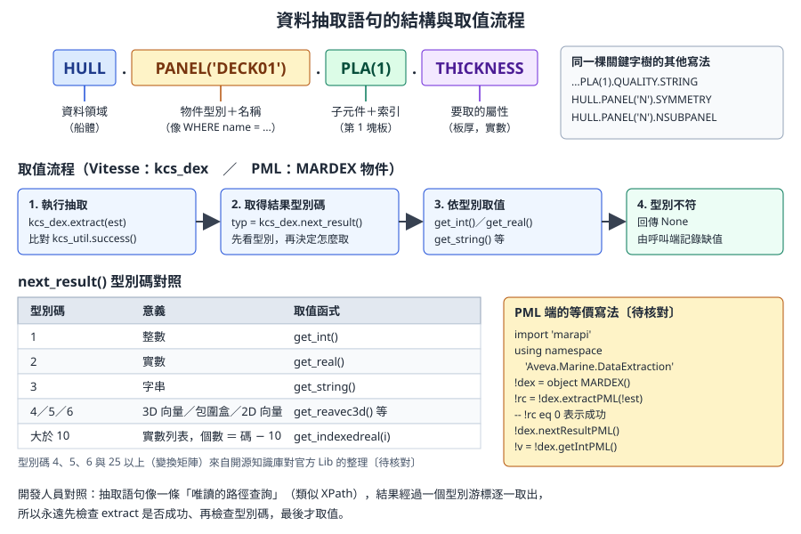
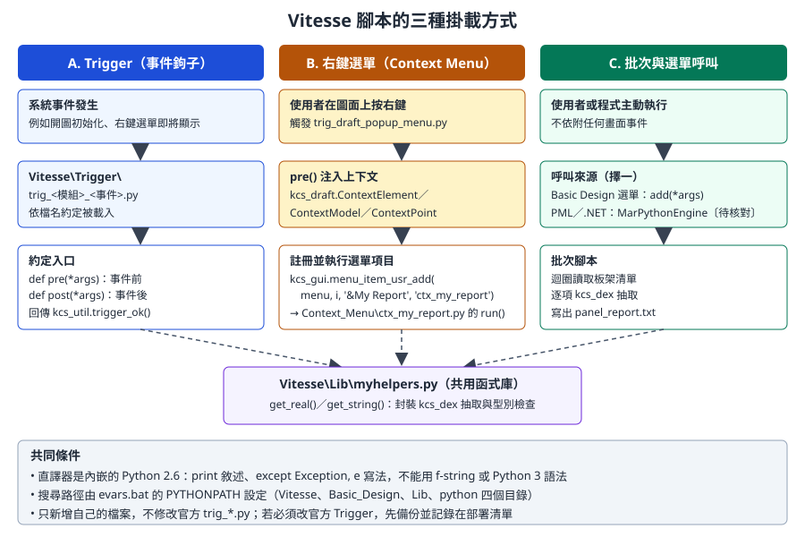

第 15 章 船體開發：Vitesse Python 與資料抽取
船體模組承襲自 Tribon，它的客製化語言不是 PML，而是內嵌在模組中的 Vitesse（Python 2.6）。本章說明 Vitesse 的執行環境、主要模組、資料抽取語句，以及 Trigger、右鍵選單、批次腳本三種掛載方式，最後明確界定船體資料自動化的安全界線。核心範例是
examples/vitesse-hull-report/。資料可信度： Vitesse 的官方文件（
Vitesse.chm、Python.chm、Data_Extraction.chm、vitesse_access.xls）隨產品安裝在Documentation\目錄，網路上沒有公開的靜態版本。本章的 API 名稱與用法，主要依據 MIT 授權的開源知識庫 aveva-marine-dev-skill 對 Marine 12.1 SP4 安裝目錄中官方範例與函式庫的調查整理，屬於「從官方原始碼反推」的二手資料，本課程未在實機上執行。凡是知識庫自評未驗證、或只有單一出處的內容，都標為〔待核對〕。請務必用公司安裝目錄的Vitesse\Examples\與說明檔核對後再使用。
15.1 學習目標
讀完本章，你應該能夠：
- 說明 Vitesse 在 AVEVA Marine 中的定位，以及它和 PML、.NET 的分工。
- 寫出符合 Python 2.6 語法的腳本，並知道哪些 Python 3 習慣不能用。
- 認識
kcs_ui、kcs_draft、kcs_dex、kcs_util等主要模組的用途與風險等級。 - 讀懂並寫出
HULL.PANEL('名稱').PLA(1).THICKNESS這類資料抽取語句，正確處理結果型別。 - 以 Trigger、右鍵選單、批次腳本三種方式掛載腳本。
- 說明從 PML 或 .NET 讀取船體資料的途徑與版本限制。
- 判斷一個船體自動化需求落在安全界線的哪一側，並提出對應的控管方式。
15.2 Vitesse 的定位
AVEVA Marine 由 Tribon M3（船體）與 PDMS（舾裝）整合而成（第 1 章）。兩邊的客製化技術也一起帶了進來：
| 路線 | 來源 | 主要用途 | 本課程章節 |
|---|---|---|---|
| PML | PDMS | 舾裝資料、表單、選單、通用資料庫操作 | 第 11 至 13 章 |
| .NET（CAF、PML.NET、marAPI） | PDMS／AVEVA 新架構 | 停靠視窗、外部整合；marAPI 也包裝了船體與圖面功能 | 第 14 章 |
| Vitesse（Python 2.6） | Tribon | 船體建模、船體圖面、資料抽取、船體 Trigger | 本章 |
圖片內容：AVEVA Hull Detailed Design 的作業畫面
圖 15-1 Hull Detailed Design 作業畫面。Vitesse 腳本主要服務這一類船體模組與 Marine Drafting。（來源：AVEVA Hull and Outfitting Datasheet）
為什麼船體要另外一套？ 第 5 章說過，船體板架不是一堆獨立的幾何，而是由「型面、邊界參考、接縫、加強材」組成的相依圖。板架的定義以船體語句（Scheme）表達，由船體引擎重建出幾何。Vitesse 與資料抽取語言直接面對這套引擎與資料，比從通用資料庫屬性去拼湊船體資訊更可靠。
開發人員須知： 可以把船體引擎想成一個「以文字描述、經過編譯才產生結果」的系統。板架的語句像原始碼，幾何像編譯產物，資料抽取則像對編譯產物的唯讀查詢 API。讀取產物很安全；修改原始碼（板架語句）並重新編譯，就會牽動所有相依的構件。這個比喻是後面安全界線的基礎。
15.3 執行環境
15.3.1 目錄結構
依開源知識庫對 12.1 SP4 安裝目錄的調查（〔待核對〕公司版本）：
| 目錄 | 內容 | 我們可以做什麼 |
|---|---|---|
Vitesse\Lib\ |
官方函式庫（Kcs*.py 資料類別、共用工具） |
新增自己的共用模組，不改官方檔案 |
Vitesse\Trigger\ |
trig_<模組>_<事件>.py 事件鉤子 |
新增 Trigger；改官方 Trigger 前要備份並登記 |
Vitesse\Context_Menu\ |
右鍵選單腳本 ctx_*.py 與對話框 |
新增自己的選單腳本 |
Vitesse\Basic_Design\ |
Basic Design 應用的選單與快速建模腳本 | 參考用 |
Vitesse\Examples\ |
官方範例 kcs_ex_*.py（Drafting、Hull、Model、Util、Weld 等） |
學 API 先看這裡 |
python\ |
Python 2.6 標準函式庫 | 不要修改 |
搜尋路徑由啟動時的 evars.bat 設定：
rem 依開源知識庫引用的 evars.bat 內容，公司版本請自行確認〔待核對〕
set pythonpath=%pdmsexe%Vitesse;%pdmsexe%Vitesse\Basic_Design;%pdmsexe%Vitesse\Lib;%pdmsexe%python
15.3.2 Python 2.6 語法限制
內嵌的直譯器是 Python 2.6。習慣 Python 3 的開發人員最容易踩到下列差異：
| 項目 | Python 2.6 寫法 | Python 3 寫法（不可用） |
|---|---|---|
| 輸出 | print 'text'、print x |
print('text') 在 2.6 會印出 tuple 或不同結果 |
| 例外 | except Exception, e: |
except Exception as e:（2.6 其實也支援 as，但官方腳本一律用逗號寫法，建議跟隨） |
| 字串格式 | '%s t=%s' % (p, t)、'{0}'.format(x) |
f-string f'{x}' |
| 字串型別 | str 是位元組、unicode 是文字；中文要特別處理 |
str 即 Unicode |
| 整數除法 | 7 / 2 等於 3 |
7 / 2 等於 3.5 |
| 字典迭代 | d.iteritems()、d.keys() 回傳 list |
d.items() 回傳 view |
| 檔案 | open(path, 'w')，沒有 encoding 參數 |
open(path, 'w', encoding='utf-8') |
| 第三方套件 | 只能用隨附的函式庫；GUI 用 wxPython | pip install 任何套件 |
專業提醒： 腳本的中文字串與註解，檔案開頭加上
# -*- coding: utf-8 -*-，存成 UTF-8。寫檔輸出中文時，用codecs.open(path, 'w', 'utf-8')或先.encode('utf-8')。輸出到船體介面的訊息建議先用英文，避免編碼問題〔待核對：Marine 介面對 Vitesse 中文訊息的顯示行為〕。
15.4 主要模組
kcs_* 模組是編譯在 Marine 主程式中的 C 擴充模組，沒有 .py 原始碼，也沒有可直接閱讀的簽章檔。官方說明在 Vitesse.chm 與 Python.chm；開源知識庫則從官方範例的實際呼叫反推出下列清單（〔待核對〕完整簽章）：
| 模組 | 用途 | 代表函式 | 風險 |
|---|---|---|---|
kcs_util |
回傳碼、環境變數、座標換算 | success()、ok()、trigger_ok()、TB_environment_get(name)、coord_to_pos() |
低 |
kcs_ui |
使用者互動：訊息、輸入、選擇、點取 | message_confirm(msg)、string_req(prompt)、real_req()、choice_select()、point2D_req() |
低 |
kcs_dex |
資料抽取（唯讀） | extract(est)、next_result()、get_int()、get_real()、get_string()、get_indexedreal(i) |
低 |
kcs_draft |
船體圖面：開圖、建立圖元、識別、尺寸、匯出 | dwg_open()、dwg_new()、text_new()、model_identify()、dwg_dxf_export() |
中：會改圖面 |
kcs_gui |
選單 | menu_get()、menu_add()、menu_item_usr_add() |
低 |
kcs_db |
物件清單查詢 | object_list_get(criteria, dbname, list) |
低 |
kcs_model |
模型關係、干涉 | model_hull_contact(model)、model_interference_check() |
低至中 |
kcs_hullpan |
平面板架管理 | pan_activate()、pan_store()、pan_recreate()、pan_split()、pan_topology() |
高：會改船體模型 |
kcs_chm |
曲面船體 | curve_planar_create()、stiffener_split()、cpan_hole_create()、store() |
高 |
kcs_hull |
板架語句執行 | pan_init()、pan_exec_stmt()、pan_store() |
高 |
kcs_weld、kcs_assembly |
焊接計算、組立 | weld_calculation()、assembly_activate() |
高 |
另外，Vitesse\Lib\ 中的 Kcs*.py 是純 Python 的資料類別，例如 KcsPoint3D.Point3D、KcsModel.Model、KcsContour2D.Contour2D，用來在呼叫 kcs_* 函式時傳遞幾何與模型資訊。
錯誤處理慣例： kcs_* 函式失敗時會丟出例外，模組上的 error 屬性存放錯誤碼字串（例如 kcs_draft.error）。官方範例的寫法是：
# 依開源知識庫整理的官方範例寫法（Vitesse\Lib\CommonSample.py 的模式）〔待核對〕
try:
kcs_draft.dwg_new(name, form, dwgtype)
except:
print 'kcs_draft error: ' + str(kcs_draft.error)
15.5 資料抽取語言
資料抽取（Data Extraction）是 Tribon 時代就有的唯讀查詢語言，用一條「路徑」指出要取的船體資料。

圖 15-2 抽取語句的結構與取值流程。（本課程自繪）
15.5.1 語句結構
| 片段 | 範例 | 意義 | 開發人員對照 |
|---|---|---|---|
| 資料領域 | HULL |
船體資料（另有 STRUCT 等） |
資料庫或 schema |
| 物件型別＋名稱 | PANEL('DECK01') |
名為 DECK01 的平面板架 | WHERE name = 'DECK01' |
| 子元件＋索引 | PLA(1) |
第 1 塊板 | 子集合索引（從 1 開始） |
| 屬性 | THICKNESS |
板厚 | 欄位 |
| 屬性的子項 | QUALITY.STRING |
材質等級的字串表示 | 欄位的格式化 |
常見語句（來源為開源知識庫對官方 PML 與 Python 檔案的整理，〔待核對〕）：
| 語句 | 取得 |
|---|---|
HULL.PANEL('N').PLA(1).THICKNESS |
第 1 塊板的板厚 |
HULL.PANEL('N').PLA(1).QUALITY.STRING |
第 1 塊板的材質 |
HULL.PANEL('N').SYMMETRY |
板架的對稱代碼 |
HULL.PANEL('N').NBOUNDARY |
邊界數量 |
HULL.PANEL('N').STIFFENER(n).PROFILE.TYPE_CODE |
第 n 根加強材的型材類型碼 |
HULL.PANEL('N').NSUBPANEL |
子板架數量 |
HULL.CPANEL('N').STIF(id).NAME |
曲面板架加強材名稱 |
專業提醒： 開源知識庫提到官方的
DatExt_*.xls表格收錄了上千條關鍵字鏈與回傳型別。完整清單請查公司安裝目錄的Data_Extraction.chm與相關表格，不要從網路片段猜語句。關鍵字有縮寫規則（例如STIF與STIFFENER），請以官方表格為準。
15.5.2 取值三步驟
kcs_dex.extract(語句)：執行抽取，回傳值與kcs_util.success()比較。kcs_dex.next_result()：取得下一個結果的型別碼。- 依型別碼呼叫對應的取值函式。
| 型別碼 | 意義 | 取值函式 |
|---|---|---|
| 1 | 整數 | get_int() |
| 2 | 實數 | get_real() |
| 3 | 字串 | get_string() |
| 大於 10 | 實數列表，個數為「型別碼減 10」 | get_indexedreal(i) |
| 4、5、6、25 以上 | 3D 向量、包圍盒、2D 向量、變換矩陣〔待核對〕 | get_reavec3d()、get_box() 等 |
15.5.3 範例：共用抽取函式
以下是 examples/vitesse-hull-report/ 中的 Vitesse\Lib\myhelpers.py（原文為簡體註解，此處只節錄程式）。它與官方 TBhook_ConfigNote 說明中的 getIntegerValue、getRealValue 等函式結構相同。
## -*- coding: utf-8 -*-
import kcs_dex, kcs_util
ok = kcs_util.success()
def get_integer(est):
res = kcs_dex.extract(est)
if res == ok:
typ = kcs_dex.next_result()
if typ == 1:
return kcs_dex.get_int()
return None
def get_real(est):
res = kcs_dex.extract(est)
if res == ok:
typ = kcs_dex.next_result()
if typ == 2:
return kcs_dex.get_real()
return None
def get_string(est):
res = kcs_dex.extract(est)
if res == ok:
typ = kcs_dex.next_result()
if typ == 3:
return kcs_dex.get_string()
return None
def get_rea_list(est):
res = kcs_dex.extract(est)
if res == ok:
typ = kcs_dex.next_result()
if typ > 10:
n = typ - 10
return [kcs_dex.get_indexedreal(i) for i in range(n)]
return []
| 重點 | 說明 |
|---|---|
ok = kcs_util.success() |
成功碼由函式取得，不要寫死數字 |
每個函式都先檢查 extract 成功 |
板架名稱打錯、板不存在時，extract 會失敗 |
| 再檢查型別碼 | 型別不符時回傳 None，不猜測、不轉型 |
回傳 None 或空 list |
讓呼叫端決定如何記錄缺值，報表中要呈現「無資料」而不是 0 |
開發人員須知：
kcs_dex是有狀態的游標：extract之後用next_result逐一取結果。不要在兩次next_result之間插入另一個extract，否則前一個結果集會被覆蓋。把每次抽取封裝成「一進一出」的函式，就像上面的寫法，可以避免這個問題。
15.6 三種掛載方式

圖 15-3 Vitesse 腳本的三種掛載方式。（本課程自繪，依開源知識庫對官方 Trigger 與 Context_Menu 檔案的整理）
| 方式 | 何時執行 | 入口函式 | 適合 |
|---|---|---|---|
| A. Trigger | 系統事件發生時自動呼叫 | pre(*args)、post(*args) |
存檔前檢查、命名規則、事件記錄 |
| B. 右鍵選單 | 使用者在圖面上按右鍵選擇項目 | run(*args) |
針對「點到的那個東西」做查詢 |
| C. 批次與選單 | 使用者或程式主動執行 | 一般函式或 add(*args) |
報表、批次抽取 |
15.6.1 A：Trigger
Trigger 檔案放在 Vitesse\Trigger\，命名為 trig_<模組>_<事件>.py，系統依檔名約定載入。官方空白範本的結構：
# 依開源知識庫引用的官方 trig_draft_init.py 結構〔待核對〕
import kcs_util
def pre(*args):
return kcs_util.trigger_ok()
def post(*args):
return kcs_util.trigger_ok()
| 回傳值 | 意義 |
|---|---|
kcs_util.trigger_ok() |
正常，讓系統繼續原本的動作 |
kcs_util.trigger_abort() |
中止原本的動作（pre 中使用） |
kcs_util.trigger_override() |
pre 中使用，表示由腳本接手、略過原本的函式 |
〔待核對〕Trigger 與事件的完整對應清單、Trigger 是否需要另外登記（知識庫提到部分 Trigger 經由資料庫巨集間接綁定），請查 Vitesse.chm。
專業提醒： Trigger 在每一次事件都會執行，而且使用者通常不知道它存在。Trigger 內只做快速、唯讀的檢查；任何例外都要攔截並回傳
trigger_ok()，避免一個腳本錯誤讓所有人無法開圖。trigger_abort()會阻擋使用者的操作，必須經過領域主管同意才能使用。
15.6.2 B：右鍵選單
右鍵選單由兩部分組成：
trig_draft_popup_menu.py（官方 Trigger）：使用者按右鍵時，把「點到什麼」放進kcs_draft模組的四個變數：ContextPoint、ContextElement、ContextModel、ContextSubpictures，並以kcs_gui.menu_item_usr_add(選單, 位置, '標籤', '腳本名')註冊選單項目。Context_Menu\ctx_*.py：選單項目對應的腳本，入口為run(*args)。
範例中的 ctx_my_report.py：
import kcs_draft
import kcs_ui
def run(*args):
if not hasattr(kcs_draft, 'ContextElement') or kcs_draft.ContextElement is None:
kcs_ui.message_confirm('No element under cursor!')
return
model = getattr(kcs_draft, 'ContextModel', None)
if model is None:
kcs_ui.message_confirm('Not a model element.')
return
panel = model.get_name()
lines = []
lines.append('PANEL %s' % panel)
thi = get_real("HULL.PANEL('%s').PLA(1).THICKNESS" % panel)
if thi is not None:
lines.append('PLATE t=%s mm' % thi)
qual = get_string("HULL.PANEL('%s').PLA(1).QUALITY.STRING" % panel)
if qual:
lines.append('QUALITY %s' % qual)
kcs_ui.message_confirm('\n'.join(lines))
| 行 | 解說 |
|---|---|
hasattr(kcs_draft, 'ContextElement') |
上下文變數由 Trigger 注入，腳本被單獨呼叫時可能不存在，所以先檢查 |
getattr(..., 'ContextModel', None) |
點到的不一定是模型（可能是文字或尺寸），取不到就提示並結束 |
model.get_name() |
範例原文用這個方法取得板架名稱〔待核對：官方 KcsModel.Model 類別的方法名，開源知識庫列的是 Name 屬性與 Set／Get 方法，請以 Vitesse\Lib\KcsModel.py 為準〕 |
get_real、get_string |
來自 15.5.3 的共用函式。範例原文少了 from myhelpers import get_real, get_string，直接執行會出現 NameError，部署時要補上 |
kcs_ui.message_confirm |
以訊息框顯示結果；複雜介面可用 wxPython |
專業提醒： 要讓自己的選單項目出現，必須在
trig_draft_popup_menu.py中加一行menu_item_usr_add，也就是修改官方 Trigger。這是 Vitesse 少數難以避免改官方檔案的情況。做法：先備份原檔、只加入最少的程式碼、用註解標記公司修改區段，並在部署清單登記；Service Pack 升級後要重新合併。
圖片內容：模型在圖面中呈現的例子
圖 15-4 Marine Drafting 中的模型視圖。右鍵選單腳本的 ContextModel 就是使用者在這類視圖上點到的模型。（來源：AVEVA Hull and Outfitting Datasheet）
15.6.3 C：批次腳本
範例的批次版本讀取固定的板架清單，寫出文字報表：
import kcs_ui, kcs_dex
from myhelpers import get_real, get_string
panels = ('DECK01', 'DECK02', 'SIDE01')
out = []
for p in panels:
t = get_real("HULL.PANEL('%s').PLA(1).THICKNESS" % p)
q = get_string("HULL.PANEL('%s').PLA(1).QUALITY.STRING" % p)
out.append('%s t=%s Q=%s' % (p, t, q))
f = open('C:/mydev/panel_report.txt', 'w')
f.write('\n'.join(out))
f.close()
執行結果是每行一個板架，例如 DECK01 t=12.0 Q=AH32（數值為示意）。把它改成適合交給 Excel 或其他系統的 CSV，並加上錯誤記錄：
# -*- coding: utf-8 -*-
# 示意：panel_thickness_csv.py，放在 Vitesse\Lib\ 下，Python 2.6 語法
import os, time
from myhelpers import get_real, get_string, get_integer
def plate_rows(panel):
"""回傳 [(panel, plate_no, thickness, quality), ...]；板數不明時只取第 1 塊"""
rows = []
n = get_integer("HULL.PANEL('%s').NPLA" % panel) # NPLA 關鍵字為假設〔待核對〕
if n is None:
n = 1
for i in range(1, n + 1):
t = get_real("HULL.PANEL('%s').PLA(%d).THICKNESS" % (panel, i))
q = get_string("HULL.PANEL('%s').PLA(%d).QUALITY.STRING" % (panel, i))
rows.append((panel, i, t, q))
return rows
def export(panels, out_dir):
stamp = time.strftime('%Y%m%d_%H%M%S')
path = os.path.join(out_dir, 'panel_thickness_%s.csv' % stamp)
f = open(path, 'w')
try:
f.write('\xef\xbb\xbf') # UTF-8 BOM，讓 Excel 正確開啟
f.write('panel,plate,thickness,quality\n')
for p in panels:
try:
for r in plate_rows(p):
t = '' if r[2] is None else '%.1f' % r[2]
q = r[3] or ''
f.write('%s,%d,%s,%s\n' % (r[0], r[1], t, q))
except Exception, e:
f.write('%s,,,ERROR %s\n' % (p, str(e).replace(',', ';')))
finally:
f.close()
return path
| 設計 | 原因 |
|---|---|
| 檔名加時間戳記 | 不覆蓋舊報表，方便比對 |
| 寫入 BOM | 第 16 章：Excel 開啟 UTF-8 CSV 需要 BOM |
| 缺值輸出空字串 | 不把「沒有資料」誤寫成 0 |
| 單一板架失敗不中斷 | 錯誤寫進報表，整批仍完成 |
try/finally 關檔 |
例外時仍釋放檔案 |
〔待核對〕批次腳本的啟動方式：知識庫列出命令窗口執行 PYTHON 腳本名、Basic Design 選單的 menu_item_usr_add，以及從 .NET／PML 經 marAPI 的 MarPythonEngine.RunPythonScript(路徑) 等方式，請依公司版本確認哪一種可用。
15.7 從 PML 或 .NET 讀取船體資料
除了 Vitesse，Marine 12.1 還提供 marAPI（marAPI.dll，命名空間 Aveva.Marine.*），它把同一套船體與圖面功能包成 .NET 類別，PML 可以透過 PML.NET 機制使用（第 14 章）。
| 途徑 | 寫法 | 狀態 |
|---|---|---|
| PML 讀船體元素的一般屬性 | !!ce、COLLECTION 收集 HPANEL、HPLATE 等元素（第 3、12 章） |
通用 PML，但船體幾何與語句細節不一定能以屬性取得 |
| PML 經 marAPI 做資料抽取 | import 'marapi' → using namespace 'Aveva.Marine.DataExtraction' → object MARDEX() → extractPML() |
開源知識庫指出官方 PMLLIB\hulldesign 中有此用法〔待核對〕 |
| PML 經 marAPI 執行船體語句 | object MARHULLPAN() 的 stmtExec()、panStore() |
會改船體模型，屬於 15.8 的紅區 |
| .NET 直接引用 marAPI | 加入 marAPI.dll 參考 |
參考 Documentation\NETmarAPI.chm〔待核對〕 |
| PML 或 .NET 執行 Vitesse 腳本 | MarPythonEngine.RunPythonScript(路徑) |
知識庫自反射結果發現，官方 PML 未使用〔待核對〕 |
PML 端的資料抽取寫法：
-- 示意：依開源知識庫整理的官方 phullnotch.pmlobj 用法改寫，未在實機執行〔待核對〕
import 'marapi'
handle (1000,0)
-- 已匯入，忽略
endhandle
using namespace 'Aveva.Marine.DataExtraction'
-- 回傳板厚；取不到時回傳 -1，由呼叫端判斷
define function !!mycoPanelThickness(!panel is STRING) is REAL
!dex = object MARDEX()
!est = 'HULL.PANEL(' & '''' & !panel & '''' & ').PLA(1).THICKNESS'
!rc = !dex.extractPML(!est)
handle (1000,0)
return -1
endhandle
if (!rc eq 0) then
!dex.nextResultPML()
return !dex.getReal()
endif
return -1
endfunction
專業提醒： 第 18 章的外板開孔論文使用了
!!Dex.CreateRestrictedPlane、!!Dex.SolveIntersectionSpaceCurvePML等方法，和這裡的MARDEX很可能是同一家族，但論文版本與公司版本不一定相同。marAPI 的方法常成對出現（例如Extract與ExtractPML），PML 只能呼叫PML結尾的版本或純量參數的多載；寫之前先用q meth !dex列出實際的方法。
版本差異： marAPI 是 Marine 專屬元件，E3D 沒有。各 Service Pack 的 marAPI 也可能增減方法，所以 15.7 的程式碼都應視為需要在公司版本驗證的起點。
15.8 船體資料自動化的安全界線
這是本章最重要的一節。船體資料有「相依鏈」與「生產快照」兩個特性（第 5、6 章），讓錯誤的自動化代價遠高於舾裝。
15.8.1 三區分級
| 區域 | 動作 | 例子 | 控管 |
|---|---|---|---|
| 綠區：唯讀 | 資料抽取、查詢、報表、檢查 | 板厚與材質清單、未定義材質的板、命名檢查、重量統計 | 一般程式審查即可 |
| 黃區：只改自己產出的東西 | 在工具自己建立的圖面或圖層上加註記、匯出檔案 | 在報告用圖面上標註板厚、匯出 DXF | 限定作用範圍；不碰他人的圖面；可重新產生 |
| 紅區：改船體模型或生產資料 | 執行板架語句、重建、分割、移動、儲存板架；修改邊界參考；重新抽出零件；套料 | kcs_hullpan.pan_store()、kcs_hull.pan_exec_stmt()、MARHULLPAN.stmtExec()、kcs_chm.store() |
需要立案、領域主管核准、訓練專案驗證、逐項預覽與人工確認；預設不做 |
15.8.2 為什麼紅區不應自動化
| 原因 | 說明 |
|---|---|
| 相依鏈 | 修改一個板架的邊界或接縫，所有以它為參考的板架、加強材、肘板、開孔都可能需要重建，影響範圍不容易預先算清楚 |
| 生產狀態 | 板架可能已經抽出零件、套料，甚至已經下料。程式不知道現場狀態，修改後生產端拿到的是過時資料 |
| 他人的工作 | 板架由不同設計者負責；批次腳本可能在對方不知情的情況下改動 |
| 難以復原 | 船體重建是引擎運算的結果，錯誤的批次修改不一定能用簡單的 Undo 還原 |
| 錯誤不明顯 | 幾何上「看起來對」的修改，可能讓拓撲參考指向錯誤的構件，要到出圖或下料才被發現 |
15.8.3 落地規則
- 工具預設唯讀。 任何會呼叫
pan_store、store、stmtExec、pan_recreate等函式的腳本，必須在程式開頭的註解標示「紅區」，並在工具清單中登記。 - 輔助，而非代替。 例如「建議開孔位置並畫出輔助圖形，由設計者確認後再建立」，而不是「自動建立所有開孔」。第 18 章的論文案例也採用申請、確認、執行三段狀態。
- 一次一個板架、人工確認。 若確實需要寫入，以單一板架為單位，顯示將要執行的語句，使用者確認後才執行。
- 只在訓練專案開發與測試。 紅區工具的測試資料必須是訓練專案的複本，不可在生產專案上「試一下」。
- 寫入後要能追蹤。 記錄執行者、時間、板架名稱、執行前後的語句或關鍵屬性。
- 生產資料由人工流程觸發。 零件抽出、套料、NC 產出由負責的工程師依公司流程執行，程式只做檢查與報表。
專業提醒： 判斷不了一個動作屬於哪一區時，就當作紅區。請和船體設計主管一起，用第 5 章的影響評估清單檢查一次再決定。
15.9 部署
| 項目 | 做法 |
|---|---|
| 共用函式 | 放 Vitesse\Lib\，檔名加公司前綴，例如 myco_dex.py，避免與官方或未來版本衝突 |
| 右鍵選單 | 腳本放 Vitesse\Context_Menu\，選單註冊見 15.6.2 |
| Trigger | 新增檔案；若修改官方 Trigger，備份原檔並以註解標出公司區段 |
| 版本管理 | 與 PMLLIB 一樣用 Git 管理（第 17 章），部署時從 tag 匯出 |
| 移除 | 刪除自家檔案；還原被修改的官方 Trigger |
| 文件 | 記錄每個腳本的入口、風險區域、負責人 |
〔待核對〕若 Vitesse 腳本所在的安裝目錄位於伺服器上、使用者沒有寫入權限，可考慮在啟動批次檔把公司目錄加到 pythonpath 前面，讓公司腳本不必放進安裝目錄。這需要在公司環境實測。
15.10 除錯
| 方法 | 做法 |
|---|---|
print |
Python 2.6 的 print x，輸出會出現在主控台與命令窗口 |
kcs_ui.message_debug(msg) |
除錯訊息（知識庫列出的函式〔待核對〕） |
| 模組錯誤碼 | 例外時印出 kcs_xxx.error |
| 縮小問題 | 先在命令窗口用最短的抽取語句確認名稱與型別，再寫進腳本 |
| 語法檢查 | 在開發機用 Python 2 版本的直譯器執行 python -m py_compile 檔名.py 只做語法檢查（不能執行，因為沒有 kcs_* 模組） |
| 拆出純邏輯 | 把報表格式化、CSV 寫出等純 Python 邏輯寫成不 import kcs_* 的函式，可在開發機單元測試 |
15.11 開發人員須知
- 先查官方範例。 每寫一個
kcs_*呼叫，先在Vitesse\Examples\找到官方怎麼呼叫。kcs_*沒有原始碼，猜參數順序很容易出錯。 - 名稱與索引。 抽取語句中的名稱要加單引號，索引從 1 開始。用
%格式化組語句時，注意名稱本身若含單引號會破壞語句。 - 不要把
None當 0。 抽取失敗或型別不符時，報表要明確顯示缺值。 - Python 2.6 的字串陷阱。 混用
str與unicode會出現UnicodeDecodeError；在函式邊界統一轉換。 - 路徑不寫死。 範例中的
C:/mydev/只是教學用；正式版從設定檔或環境變數取得輸出目錄（kcs_util.TB_environment_get可讀取 Tribon 環境變數〔待核對〕）。 - 紅區先問人。 船體自動化的技術難度常低於業務風險，請把 15.8 當成需求審查的一部分。
15.12 練習（只能在訓練專案）
- 找官方範例。 在公司安裝目錄找出
Vitesse\Examples\中與資料抽取、右鍵選單、Trigger 相關的範例各一個，記下檔名與入口函式。 - 抽取語句。 選一個訓練專案中的平面板架，寫出取得第 1 塊板板厚、材質、對稱代碼的三條語句，確認每條的型別碼。
- 部署範例。 把
myhelpers.py與ctx_my_report.py（補上 import）部署到訓練環境，在圖面上對一個板架按右鍵執行。記錄你修改了哪些官方檔案。 - 批次 CSV。 把 15.6.3 的
export改成從文字檔讀取板架清單，輸出 CSV，並用 Excel 開啟確認中文與數值格式。 - 安全界線判斷。 列出你們部門想要的三個船體自動化需求，用 15.8.1 的三區分級各自分類，寫出理由與控管方式。
15.13 自我檢核
- [ ] 我能說明 Vitesse、PML、.NET 三條路線在船體開發上的分工。
- [ ] 我知道 Python 2.6 的
print、例外、除法、字串與 Python 3 的差異。 - [ ] 我能列出
kcs_ui、kcs_draft、kcs_dex、kcs_util的用途，並指出哪些模組會改船體模型。 - [ ] 我能拆解
HULL.PANEL('DECK01').PLA(1).THICKNESS的每一段，並按「extract、next_result、依型別取值」的順序取值。 - [ ] 我能說明 Trigger、右鍵選單、批次腳本的入口函式與適用情境。
- [ ] 我知道右鍵選單需要修改官方
trig_draft_popup_menu.py，以及如何控管這個修改。 - [ ] 我能說明從 PML 經 marAPI 讀取船體資料的寫法與待核對之處。
- [ ] 我能把一個船體自動化需求分到綠區、黃區或紅區，並說明理由。
資料來源
- 範例原始碼：aveva-marine-dev-skill（MIT，Copyright © 2026 erbi112211-boop），本地副本
examples/vitesse-hull-report/。 - 同一開源專案的參考卷冊（依 Marine 12.1 SP4 安裝目錄整理，自評可信度等級；TODO-UNVERIFIED 者已標〔待核對〕）：《Marine-Vitesse-Python軌道速查》《Marine-Vitesse-Python-API全編》《Marine-Hull船體建模語句大全》《AVEVA-Marine-marAPI調用姿勢表》《AVEVA-Marine-NET開發技能》。
- AVEVA 產品內附文件（需由公司安裝目錄取得，網路無公開版本）：
Documentation\Vitesse.chm、Python.chm、Data_Extraction.chm、NETmarAPI.chm、vitesse_access.xls。 - AVEVA Hull and Outfitting 12.1 線上文件入口（需瀏覽器開啟）：docs.aveva.com Hull and Outfitting、Navigating the AVEVA Marine Documentation。
- 截圖：AVEVA Hull and Outfitting Datasheet（© AVEVA，內部教學用）。
- Python 2.6 語法：Python 2.6 官方文件。